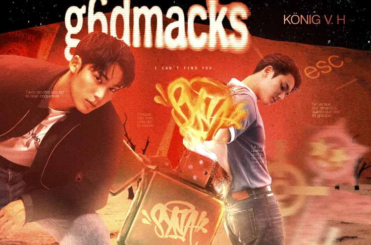
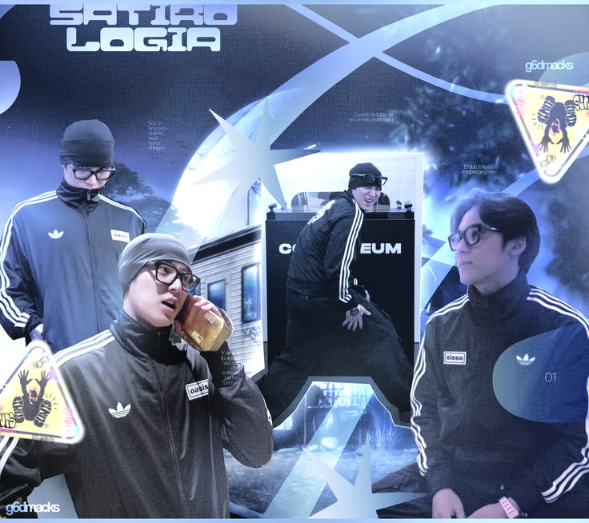
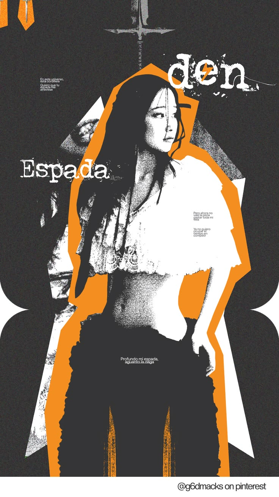

Concepto Editorial
Warm & Magazine Style
Esta edición me tomó una hora con 42 minutos, aunque disfruté bastante el proceso de este.

Y2K Streetwear
Cyber Blue Collage
Esta edición me tomó dos horas. Honestamente, fue uno de los que más me costó por las medidas que deseaba y al momento de subirlo por separado, aunque me gustó el resultado final.

Grunge & Poster Art
Espada & Contraste
Mi edición más reciente, me tomó una hora y treinta y siete minutos. Quise hacer dicho diseño ya que en ese entonces estaba escuchando "espada" de Javiera Mena. Me gustó el resultado final, pero tengo mis favoritos.